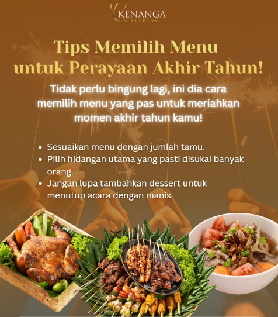

Memilih menu catering yang tepat memerlukan pertimbangan matang agar sesuai dengan tema acara, anggaran, dan preferensi tamu.
Berikut adalah beberapa tips yang bisa Anda ikuti:
1. Tentukan Tema Acara dan Anggaran:
Pahami Tema:
Sesuaikan menu dengan tema acara. Misalnya, jika tema tradisional, pilih hidangan daerah yang sesuai. Jika tema modern, pilih menu yang lebih variatif dan fleksibel.
Tetapkan Anggaran:
Tentukan anggaran catering sejak awal untuk mempermudah pemilihan vendor dan menu yang sesuai.
2. Pilih Vendor Catering Terpercaya:
Cari Referensi:
Minta rekomendasi dari teman, keluarga, atau rekan kerja yang pernah menggunakan jasa catering.
Baca Ulasan:
Cek ulasan dan testimoni dari pelanggan sebelumnya di media sosial atau website vendor.
Lihat Portofolio:
Periksa foto dan deskripsi menu yang pernah disediakan untuk memastikan kualitas dan variasi.
3. Sesuaikan Menu dengan Kebutuhan:
Jumlah Tamu:
Perhitungkan jumlah tamu undangan dan lebihkan sedikit untuk antisipasi tamu tak terduga.
Preferensi Tamu:
Pertimbangkan selera tamu yang beragam, termasuk makanan halal, vegetarian, atau diet khusus.
Variasi Menu:
Sediakan pilihan menu yang bervariasi agar tamu tidak bosan dan dapat memilih sesuai selera.
4. Lakukan Food Tasting:
Pentingnya Food Tasting:
Jangan lewatkan sesi food tasting untuk mencicipi langsung kualitas rasa dan tampilan hidangan.
Evaluasi:
Perhatikan rasa, tekstur, dan presentasi makanan. Bandingkan dengan vendor lain jika perlu.
Memilih menu catering yang tepat memerlukan pertimbangan matang agar sesuai dengan tema acara, anggaran, dan preferensi tamu. Berikut adalah beberapa tips yang bisa Anda ikuti:
1. Tentukan Tema Acara dan Anggaran:
Pahami Tema:
Sesuaikan menu dengan tema acara. Misalnya, jika tema tradisional, pilih hidangan daerah yang sesuai. Jika tema modern, pilih menu yang lebih variatif dan fleksibel.
Tetapkan Anggaran:
Tentukan anggaran catering sejak awal untuk mempermudah pemilihan vendor dan menu yang sesuai.
2. Pilih Vendor Catering Terpercaya:
Cari Referensi:
Minta rekomendasi dari teman, keluarga, atau rekan kerja yang pernah menggunakan jasa catering.
Baca Ulasan:
Cek ulasan dan testimoni dari pelanggan sebelumnya di media sosial atau website vendor.
Lihat Portofolio:
Periksa foto dan deskripsi menu yang pernah disediakan untuk memastikan kualitas dan variasi.
3. Sesuaikan Menu dengan Kebutuhan:
Jumlah Tamu:
Perhitungkan jumlah tamu undangan dan lebihkan sedikit untuk antisipasi tamu tak terduga.
Preferensi Tamu:
Pertimbangkan selera tamu yang beragam, termasuk makanan halal, vegetarian, atau diet khusus.
Variasi Menu:
Sediakan pilihan menu yang bervariasi agar tamu tidak bosan dan dapat memilih sesuai selera.
4. Lakukan Food Tasting:
Pentingnya Food Tasting:
Jangan lewatkan sesi food tasting untuk mencicipi langsung kualitas rasa dan tampilan hidangan.
Evaluasi:
Perhatikan rasa, tekstur, dan presentasi makanan. Bandingkan dengan vendor lain jika perlu.
5. Perhatikan Pelayanan dan Detail:
Profesionalisme:
Pilih vendor yang responsif, komunikatif, dan memberikan pelayanan yang baik.
Detail Layanan:
Pastikan semua detail layanan, seperti waktu pengiriman, dekorasi, dan peralatan, sudah jelas dan disepakati.
6. Pertimbangkan Logistik dan Peralatan:
Ketersediaan: Pastikan vendor memiliki peralatan yang cukup untuk acara Anda.
Pengaturan:
Diskusikan tata letak penyajian makanan, seperti prasmanan atau gubukan, agar sesuai dengan konsep acara.
7. Perhatikan Kontrak:
Detail Perjanjian:
Baca dengan teliti semua poin dalam kontrak, termasuk harga, menu, waktu pengiriman, dan pembatalan.
Kesepakatan Tertulis:
Pastikan semua kesepakatan tertulis untuk menghindari kesalahpahaman di kemudian hari.